小米4手机操作指南玩家手册
作者：TeliuTe 来源：基础教程网
二、打电话和发短信 返回目录 下一课打电话用绿色是接听按钮，红色是挂断通话；
1、打电话
1）手指向上滑动解锁屏幕，点下边左下角的电话拨号按钮，显示拨号盘；
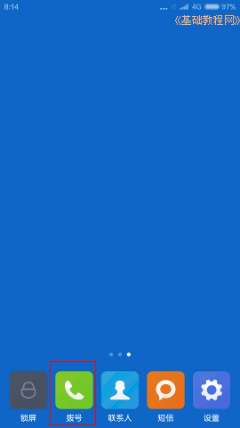
2）拨号界面上边可以选择最近通话人、联系人，下边可以直接点击输入电话号码；
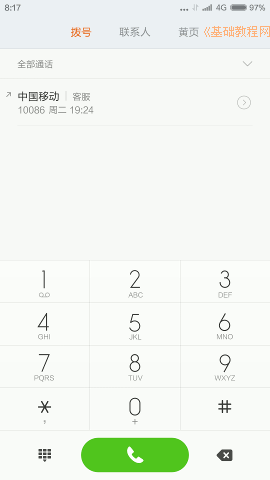
3）输入号码或选择一个联系人后，按下边的绿色按钮拨打号码，开始接通电话，红色按钮是挂断电话；
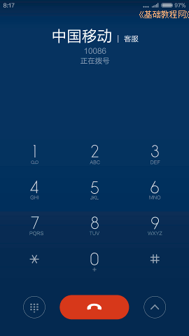
4）接通电话后，左下角许多小方块的是显示拨号盘按钮，右下角箭头是工具按钮，可以切换到外放喇叭听筒，录音、静音等；
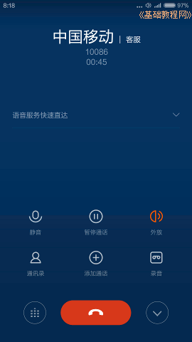
2、发短信
1）在主屏幕，点按下边的短信按钮，进入到短信界面；
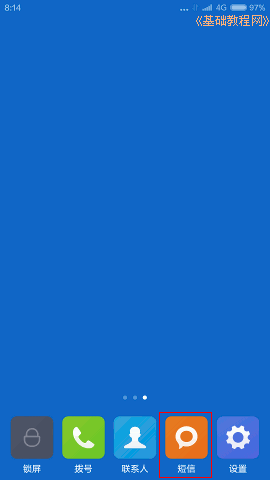
2）点按最下边的“写短信”，可以写一条新信息，上边输入手机号码，或者选择一个联系人，选择好以后，要点按下边的“确定”；
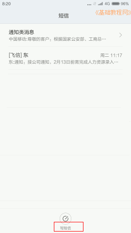 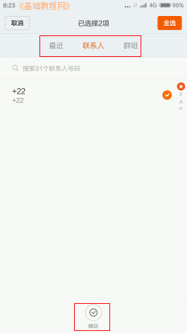
3）再在下边的信息内容中输入文字或数字，点右边绿色的发送箭头按钮，发送短信出去；
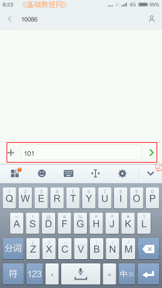
4）查看一个短信，也可以在下边直接输入内容后回复；
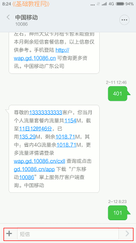
5）在一个短信内容上长按，在下边会显示工具菜单，可以转发、复制或删除这条短信；
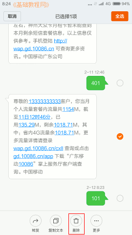
6）点击短信内容中的蓝色链接或数字，会弹出选择菜单，选择后可以复制这行链接或数字
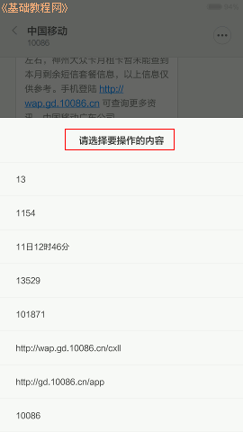
本节学习了打电话和发短信的基础知识，如果你成功地完成了练习，请继续学习下一课内容；
本教程由86团学校TeliuTe制作|著作权所有
基础教程网：http://teliute.org/
美丽的校园……
转载和引用本站内容，请保留作者和本站链接。